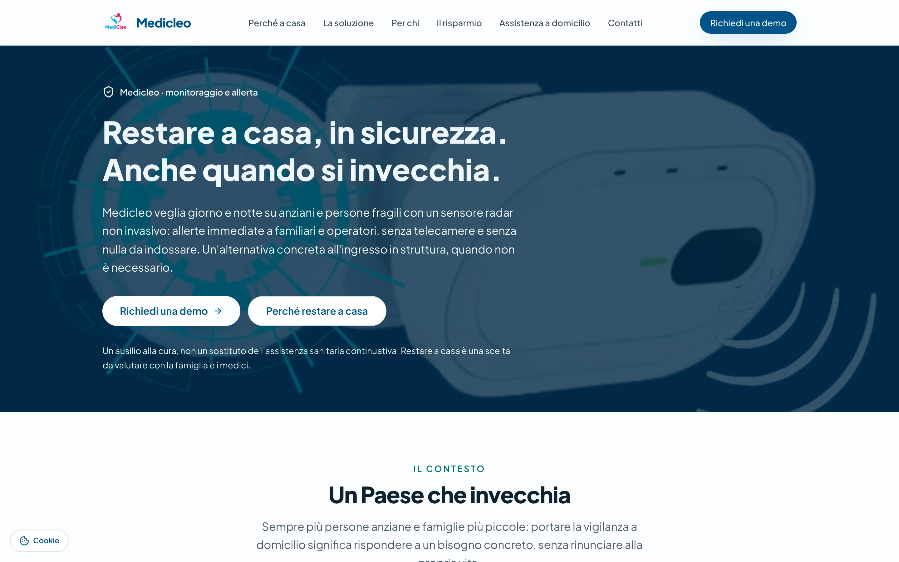
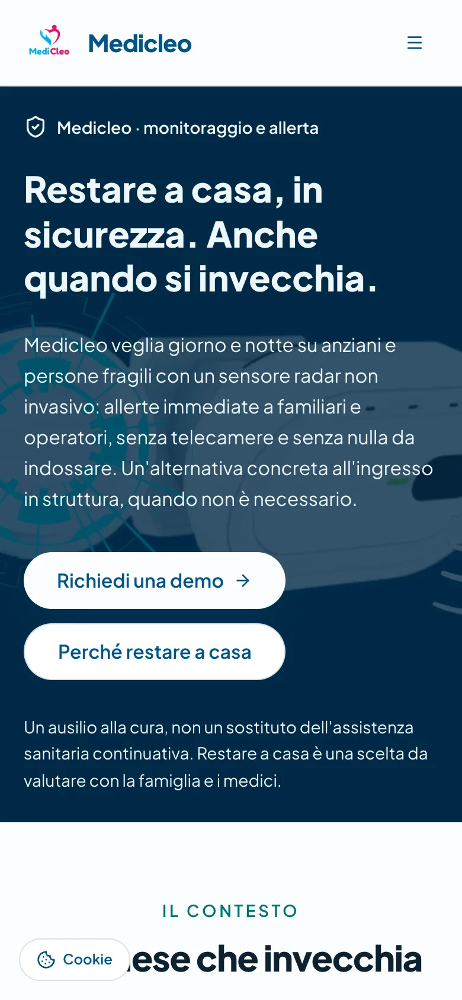
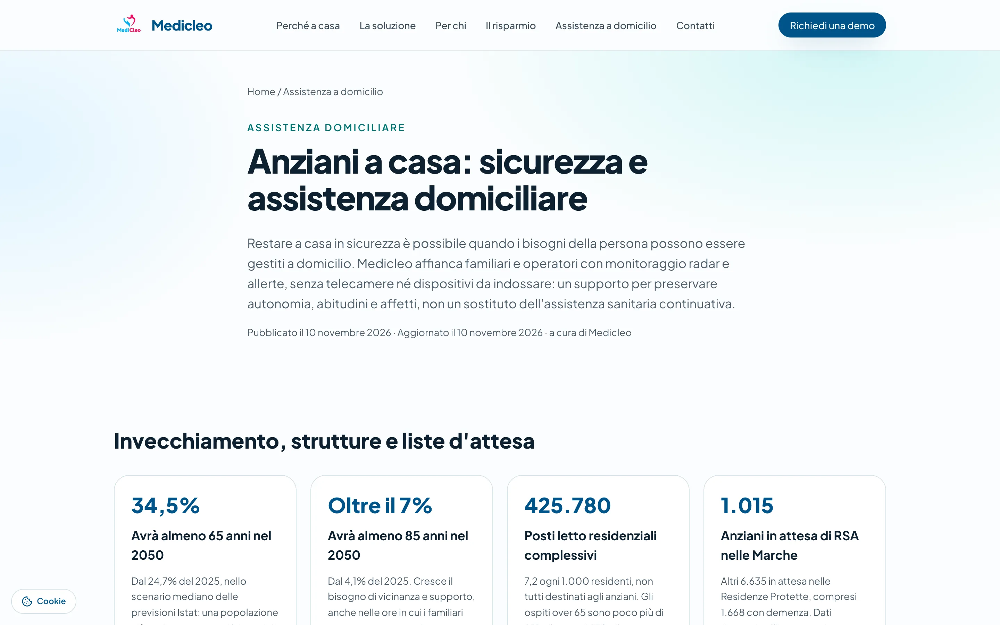
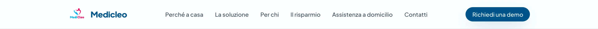
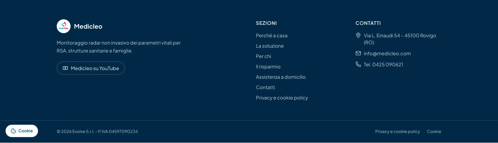

Design system attuale · medicleo.com
Interfaccia blu petrolio coerente e accessibile, Plus Jakarta Sans molto marcato, molti dati con fonti. Il punto debole è il marchio: il logo magenta e ciano non ha nulla in comune con i colori del sito, e il nome compare due volte.
Gli elementi base del sito in un colpo d'occhio: i colori con il loro ruolo (come sono definiti nel codice), i caratteri, i pulsanti e le forme ricorrenti.
22pxCosa tenere e cosa correggere nel restyling. I problemi sono ordinati per gravità; ognuno riporta da dove viene l'evidenza.
Il logo è magenta (~#E00060) e ciano (~#00A0F0); questi colori non compaiono in nessun punto dell'interfaccia.
Il logo contiene la scritta "MediCleo" e accanto c'è il testo "Medicleo": due grafie diverse una accanto all'altra.
Il logo è un WebP 300×300 mostrato a 44px: la scritta interna è al limite della leggibilità.
Homepage su desktop (1440px) e su mobile (390px), poi le pagine interne analizzate. Clicca un'immagine per vedere la pagina intera.





Quanto è usato davvero ogni colore. La barra mostra le proporzioni: gli sfondi sono pesati per superficie occupata, i testi per numero di caratteri. I quadretti indicano i colori semitrasparenti.
#FFFFFF45.5% della superficie#00294624.4% della superficie#ECF5F820.6% della superficie#0028465.1% della superficie · trasp. 0.8#FBFDFE2.7% della superficie · trasp. 0.85#FBFDFE1.1% della superficie#00558B0.4% della superficie#E5F5FA0.1% della superficie#4C5D6A46.8% del testo#0D213120.6% del testo#0D213118.9% del testo · trasp. 0.9#EEF7FA3.4% del testo#EDF8FA3.1% del testo · trasp. 0.8#F9FCFE2.5% del testo#00558B2.3% del testo#0C20310.9% del testo · trasp. 0.8#0073730.8% del testo#EEF7FA0.8% del testo · trasp. 0.75#D7E4E975.4% dei bordi#C4D4DB15.6% dei bordi#EFF7FB4.5% dei bordi · trasp. 0.25#00558C2.2% dei bordi · trasp. 0.2#D7E4EA1.1% dei bordi · trasp. 0.7#EBF8F81.1% dei bordi · trasp. 0.15Il contrasto misura quanto un testo si stacca dallo sfondo. La soglia minima per il testo normale è 4.5:1; per i testi grandi basta 3:1.
| Elemento | Sfondo | Contrasto | Esito |
|---|---|---|---|
| Testo #4C5D6A | #FFFFFF | 6.82:1 | Leggibile (AA) |
| Testo #0D2131 | #FFFFFF | 16.42:1 | Leggibile (AA) |
| Testo #00558B | #FFFFFF | 7.86:1 | Leggibile (AA) |
| Pulsante «Cookie» | #FFFFFF | 7.86:1 | Leggibile (AA) |
| Pulsante «Richiedi una demo» | #00558B | 7.63:1 | Leggibile (AA) |
| Pulsante «Richiedi una demo» | #FBFDFE | 7.70:1 | Leggibile (AA) |
| Pulsante «Perché restare a casa» | #FFFFFF | 7.86:1 | Leggibile (AA) |
| Pulsante «Invia richiesta» | #00558B | 7.63:1 | Leggibile (AA) |
I titoli e il testo come appaiono sul sito, con dimensione, interlinea, peso e colore. Sotto, tutte le dimensioni di carattere usate, dalla più grande alla più piccola.
Pulsanti, badge, card e campi dei form ricostruiti con gli stili reali, ognuno sul suo sfondo (dove lo sfondo è un'immagine o un gradiente scuro, viene simulato).
Nessun badge rilevato.
Forma, sfondo, bordo e ombra reali; il contenuto è schematizzato.
Raggi degli angoli e ombre più usati. Un raggio di 9999px significa forma a pillola.
22px12px9999px4px18px26px32px14pxPer chi sviluppa: valori grezzi estratti dal browser. Il file completo è tokens.json.
| Elemento | Valore |
|---|---|
| Larghezza massima contenuti | 1152px (11), 672px (8), 768px (3), 1024px (2) |
| Spazio verticale delle sezioni | 80px / 80px (8), 0px / 0px (2), 96px / 96px (2) |
| Spaziature tra elementi (gap) | 12px (15), 8px (12), 16px (9), 24px (4), 20px (3), 10px (2), 40px (2), 6px (1), 28px (1), 32px (1) |
| Header | {"bg": "#FBFDFED9", "h": 73, "position": "sticky", "backdrop": "blur(12px)", "borderBottom": "1px #D7E4EAB3"} |
| Footer | {"bg": "#002946", "color": "#EEF7FA", "h": 413} |
| Icone Lucide usate | chevron-down, circle-check, arrow-right, heart-pulse, bell-ring, smartphone, eye-off, house, users, map-pin, mail, phone, cookie, shield-check, building2, building-2, radar, activity, play, youtube |
| Transizioni e animazioni | 0.15s cubic-bezier(0.4, 0, 0.2, 1) (30), 0.2s cubic-bezier(0.4, 0, 0.2, 1) (16), 0.7s, 0.7s ease, ease (5) |
| tag | font | size | peso | interlinea | colore | caratteri | esempio |
|---|---|---|---|---|---|---|---|
| p | Plus Jakarta Sans | 18px | 400 | 29.25px | #4C5D6A | 1609 | Sempre più persone anziane e famiglie più picc |
| p | Plus Jakarta Sans | 16px | 400 | 26px | #4C5D6A | 1468 | Frequenza cardiaca e respiratoria, sonno e pre |
| span | Plus Jakarta Sans | 16px | 400 | 24px | #4C5D6A | 710 | Un supporto per chi può restare a casa propria |
| p | Plus Jakarta Sans | 14px | 400 | 20px | #4C5D6A | 669 | Elaborazione su dati Istat riferiti a date div |
| button | Plus Jakarta Sans | 16px | 600 | 24px | #0D2131 | 578 | Medicleo può evitare l’ingresso in RSA? |
| p | Plus Jakarta Sans | 14px | 400 | 22.75px | #4C5D6A | 538 | Dal 24,7% del 2025, nello scenario mediano del |
| a | Plus Jakarta Sans | 12px | 400 | 19.5px | #4C5D6A | 513 | Istat, previsioni base 1/1/2025 · 31 agosto 20 |
| p | Plus Jakarta Sans | 16px | 400 | 26px | #0D2131 | 497 | Con circa 14,8 milioni di over 65 e poco più d |
| h3 | Plus Jakarta Sans | 18px | 700 | 28px | #0D2131 | 365 | Avrà almeno 65 anni nel 2050 |
| h2 | Plus Jakarta Sans | 36px | 800 | 40px | #0D2131 | 295 | Un Paese che invecchia |
| p | Plus Jakarta Sans | 18px | 400 | 29.25px | #EEF7FA | 258 | Medicleo veglia giorno e notte su anziani e pe |
| p | Plus Jakarta Sans | 16px | 400 | 26px | #F9FCFE | 195 | Una scelta importante merita risposte concrete |
| p | Plus Jakarta Sans | 14px | 400 | 22.75px | #EEF7FA | 146 | Un ausilio alla cura, non un sostituto dell'as |
| p | Plus Jakarta Sans | 16px | 400 | 24px | #4C5D6A | 135 | La stima sarà disponibile dopo aver inserito e |
| a | Plus Jakarta Sans | 14px | 400 | 20px | #EDF8FACC | 130 | Perché a casa |
| h3 | Plus Jakarta Sans | 20px | 700 | 28px | #0D2131 | 113 | Confronta i costi della tua situazione |
| p | Plus Jakarta Sans | 14px | 600 | 20px | #007373 | 99 | Il contesto |
| a | Plus Jakarta Sans | 16px | 600 | 24px | #00558B | 97 | Richiedi una demo |
| p | Plus Jakarta Sans | 14px | 400 | 22.75px | #EDF8FACC | 93 | Monitoraggio radar non invasivo dei parametri |
| h3 | Plus Jakarta Sans | 16px | 700 | 24px | #0D2131 | 87 | Monitoraggio continuo |
| label | Plus Jakarta Sans | 16px | 600 | 24px | #0D2131 | 78 | Retta mensile della struttura (€) |
| a | Plus Jakarta Sans | 14px | 500 | 20px | #0C2031CC | 74 | Perché a casa |
| p | Plus Jakarta Sans | 12px | 400 | 19.5px | #4C5D6A | 60 | Fonte: Istat, previsioni base 1/1/2025 · 31 ag |
| h2 | Plus Jakarta Sans | 30px | 800 | 41.25px | #F9FCFE | 60 | Più anni a casa propria, più serenità per chi |
| token | selettore | valore |
|---|---|---|
--font-sans | :root, :host | "Plus Jakarta Sans", ui-sans-serif, system-ui, sans-serif |
--color-background | :root, :host | var(--background) |
--color-foreground | :root, :host | var(--foreground) |
--color-border | :root, :host | var(--border) |
--radius | :root | .875rem |
--background | :root | #FBFDFE |
--foreground | :root | #0D2131 |
--card | :root | #FFFFFF |
--card-foreground | :root | #0D2131 |
--popover | :root | #FFFFFF |
--popover-foreground | :root | #0D2131 |
--primary | :root | #00558B |
--primary-foreground | :root | #F9FCFE |
--secondary | :root | #E5F5FA |
--secondary-foreground | :root | #003658 |
--muted | :root | #ECF5F8 |
--muted-foreground | :root | #4C5D6A |
--accent | :root | #D5F7F4 |
--accent-foreground | :root | #004848 |
--teal | :root | #007373 |
--teal-soft | :root | #D5F7F4 |
--warm | :root | #AA5910 |
--warm-soft | :root | #FFEED9 |
--ink | :root | #002946 |
--ink-foreground | :root | #EEF7FA |
--destructive | :root | #CC2827 |
--destructive-foreground | :root | #FCFCFC |
--border | :root | #D7E4E9 |
--input | :root | #C4D4DB |
--ring | :root | #007DAA |
--gradient-hero | :root | radial-gradient(60rem 30rem at 85% 0%, #C2F4F2B3, transparent 60%), radial-gradient(40rem |
--gradient-band | :root | linear-gradient(120deg, #004678, #00646F) |